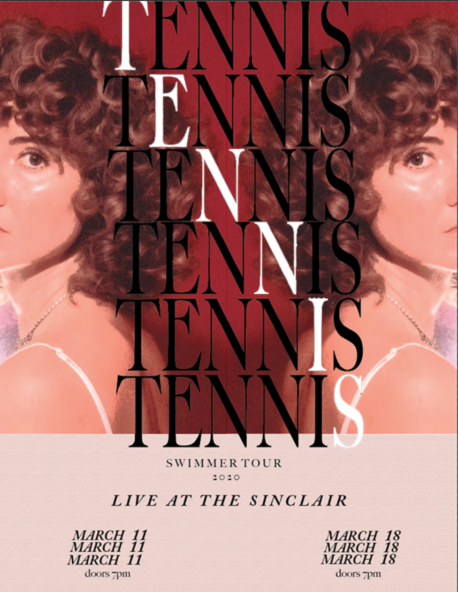
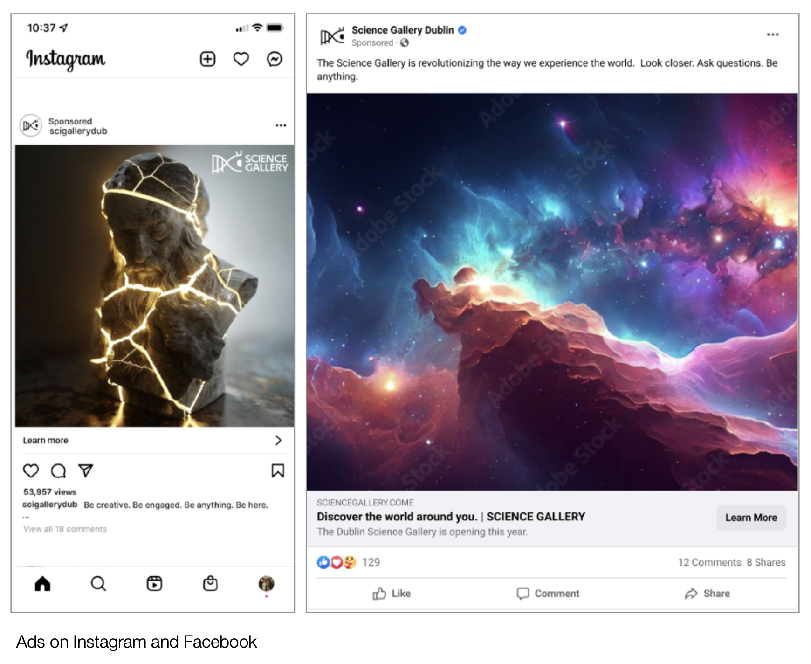
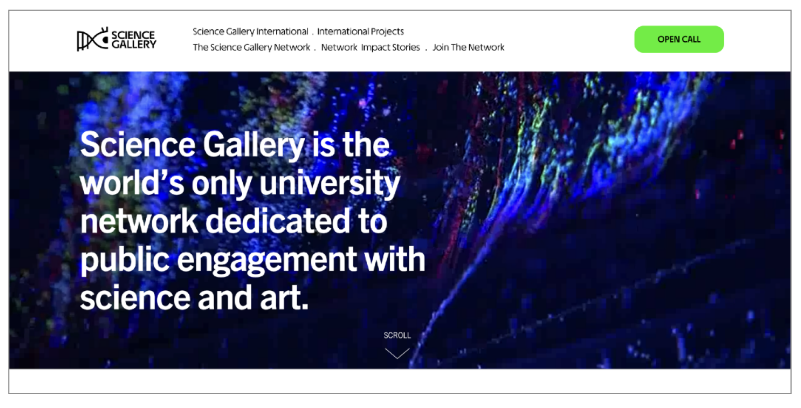
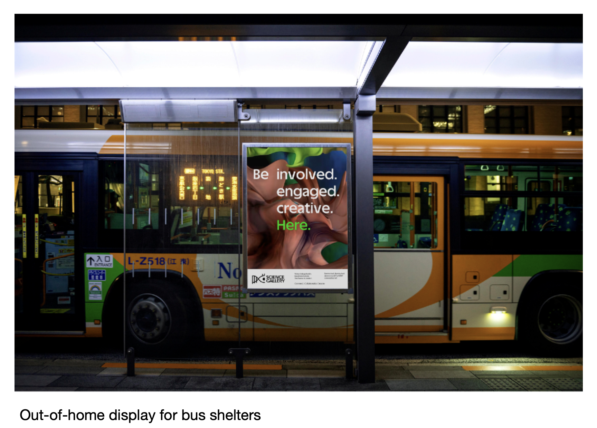
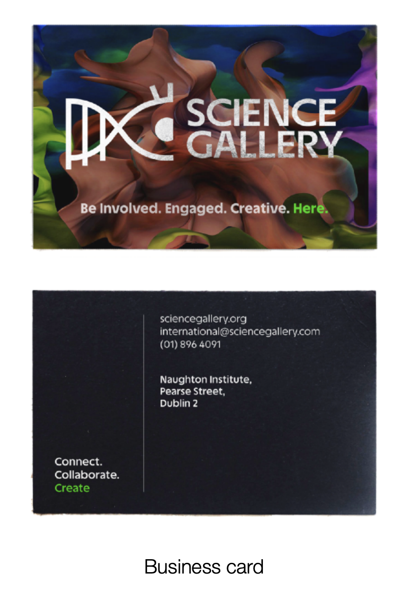
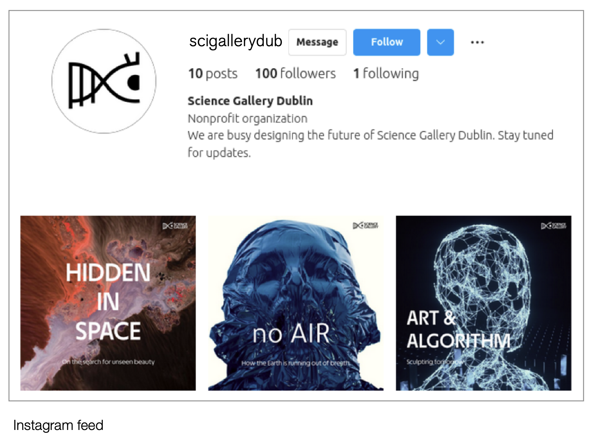
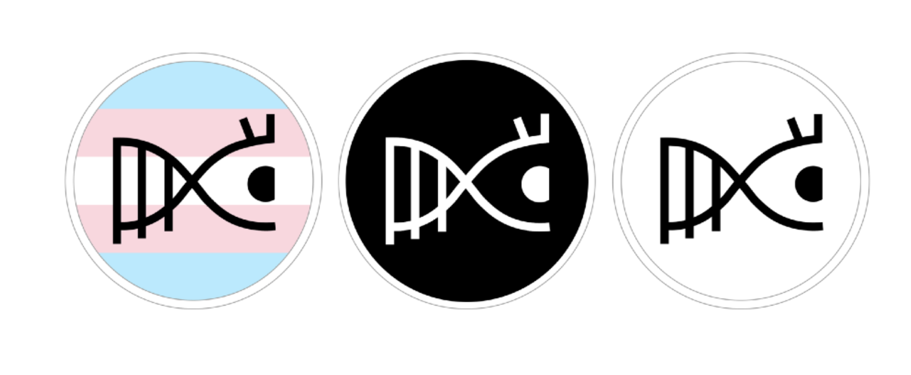
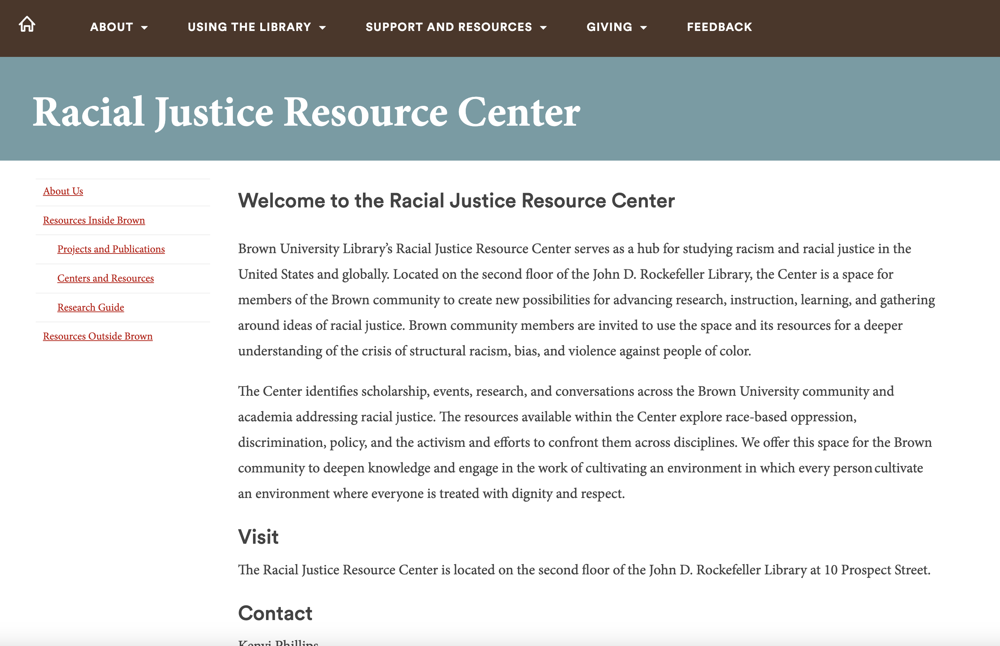
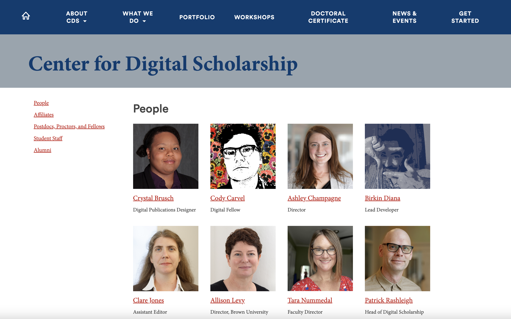

mix.tape
a social platform designed for sharing and reviewing albums, inspired by letterboxd.
made with html/css, python, and a django database.
crushd
an app for sharing, logging, and recommending natural wine


live music promotional materials
a set of flyers, playlist covers, and ads for traveling indie rock acts.
made in adobe creative suite.



dublin science gallery redesign
university group project to redesign graphics for the science gallery, a combination art museum and science exhibit associated with trinity college, dublin.








mobile UI testing walkthrough
- client: tech company
tone: instructional
link!
web3 crypto wallet setup guide
- client: web3 gaming company
tone: casual, instructional
link!
project requirements document
- client: telecom company
tone: formal, instructional
link!
BUILDING A BRIDGE BACK TO BROWN
link!- Spearheaded the Building a Bridge Back to Brown (previously Blacks at Brown) website redesign and relaunch process
- Subverted the need to integrate a new Wordpress Plugin by hard-coding an image carousel into the homepage
- Updated and maintained the interactive Black students at Brown Timeline
- Updated and maintained acknowledgements page

RACIAL JUSTICE RESOURCE CENTER
link!- created a new site on Brown University's /create server for the Racial Justice Resource Center.
- worked closely with supervisor Lucy Wang to interpret and execute instructions and content addition from stakeholders.

CENTER FOR DIGITAL SCHOLARSHIP REDESIGN
link!- Took an active role in the web team’s effort to build a new site for the Center for Digital Scholarship
- Implemented a Lucidspark Chart to improve inter-team understanding of out web content outline as documentation became manifold and confusing
- Worked closely with an interdisciplinary team to migrate, rebuild, or redesign hundreds of individual pages in the early days of this project
- Documented and notated the process of using Duplicator Pro to move site from Dev to Prod server
- Completed significant work in web content, UI organization, and inter-team communication throughout this project
